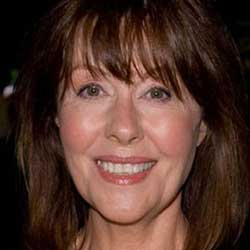

|
| Home The Doctors The Companions The Villians Show History |
Elisabeth SladenElisabeth Clara Heath-Sladen[2] (1 February 1946[3] – 19 April 2011[4]) was an English actress best known for her role as Sarah Jane Smith in the British television series Doctor Who. She was a regular cast member from 1973 to 1976, alongside both Jon Pertwee and Tom Baker, and reprised the role many times in subsequent decades, both on Doctor Who and its spin-offs, K-9 and Company and The Sarah Jane Adventures.[5] Sladen was interested in ballet and theatre from childhood, and began to appear on stage in the mid-1960s, although more often as a stage manager at this time. She moved to London in 1970 and an appearance in the police drama Z-Cars led to her being selected for a part in Doctor Who. She stayed as a regular cast member alongside Pertwee and Baker until 1976. She subsequently starred in other roles on both television and radio, before semi-retiring to bring up a family in the mid-1980s. She returned to the public eye in the 2000s with more Doctor Who related appearances, which culminated in taking a regular lead role in The Sarah Jane Adventures. The show earned the Royal Television Society 2010 award for Best Children's Drama. She also made regular guest appearances on the main television series, and provided voice-over commentaries for its releases to DVD. Sladen died of cancer on 19 April 2011. Her death made national and international news headlines, and major television stations and newspapers paid her tribute. |
|
Madeleine Schwartz Ann Marie Skjold |
Content derived from Dr. Who Wikipedia.
|